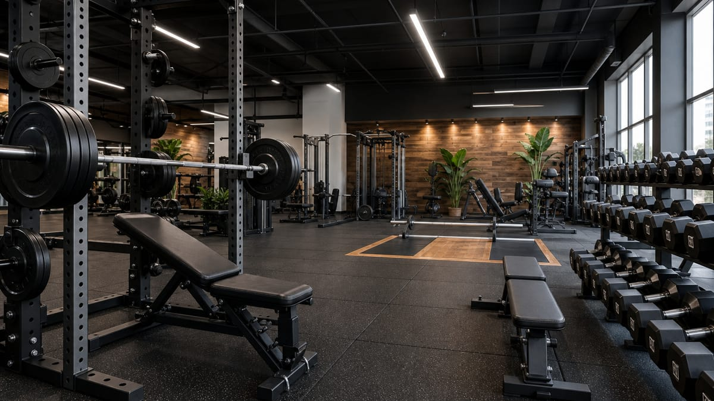
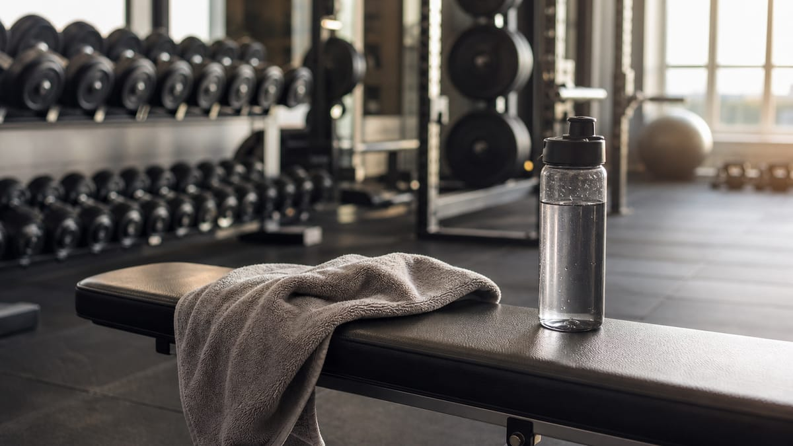

Składniki odżywcze
Każdy składnik krótko, praktycznie i ciekawie
Zdrowe odżywianie
Zasady, które działają długoterminowo — bez skrajności
1. Bilans energetyczny
Żeby schudnąć, musisz średnio spożywać mniej energii niż zużywasz (deficyt). Żeby przytyć — odwrotnie (nadwyżka). To fizyka, nie magia. Deficyt 300–500 kcal/dzień to często bezpieczny start; agresywne cięcie (1000+ kcal) bywa krótkoterminowe i męczące.
2. Jakość > sama liczba kalorii
Można schudnąć na pączkach w deficycie — ale trudniej o sytość, mikroelementy i dobre samopoczucie. Sensowna baza to:
- białko w każdym większym posiłku,
- warzywa i owoce (błonnik, witaminy),
- pełnowartościowe węglowodany przy aktywności,
- zdrowe tłuszcze zamiast wyłącznie przetworzonej żywności.
3. Model talerza (prosto)
Na obiad wizualnie: ½ talerza warzywa, ¼ białko (mięso, ryby, tofu, jaja, nabiał), ¼ węglowodany (ryż, ziemniaki, kasza, makaron). Do tego tłuszcz w rozsądnej ilości (oliwa, orzechy, sos na bazie jogurtu).
4. Białko — priorytet przy treningu
Po treningu siłowym organizm potrzebuje aminokwasów do naprawy włókien mięśniowych. Rozłożenie białka na 3–5 posiłków w ciągu dnia działa lepiej niż jedna ogromna porcja wieczorem. Zobacz też zakładkę Trening w poradniku.
5. Przetworzona żywność
Gotowce, fast food i słodycze nie są „zakazane”, ale zwykle mają dużo kcal przy małej objętości i słabym profilu odżywczym. Strategia: 80% diety z prostych produktów, 20% na elastyczność — łatwiej utrzymać rok niż tydzień na „czystej” diecie.
6. Nawodnienie i sen
Woda wspiera trawienie i wydolność; sen (7–9 h) wpływa na głód, regenerację i wyniki na siłowni. Bez snu nawet idealne makro gorzej „siada”.
7. Redukcja krok po kroku (bez gotowej diety)
Pełny przewodnik po deficycie — ile kcal odjąć, jak patrzeć na wagę i typowe błędy — znajdziesz w artykule Deficyt kaloryczny w praktyce. Planowanie posiłków na tydzień opisujemy osobno: Planowanie posiłków.
Nie potrzebujesz planu „1500 kcal na tydzień z PDF-a”. Wystarczy:
- Wpisz dane w kalkulatorze i wybierz cel odchudzanie — dostaniesz orientacyjne TDEE z deficytem.
- Ustaw białko jako pierwszy priorytet (zwykle 1,6–2,0 g/kg przy redukcji).
- Resztę kalorii rozdziel na węgle i tłuszcz według preferencji — nie ma jednej „magicznej” proporcji dla wszystkich.
- Przez 2 tygodnie jedz podobnie i obserwuj wagę (średnia z tygodnia, nie jeden dzień).
- Jeśli waga stoi 2–3 tygodnie — lekko zmniejsz kalorie lub dodaj kroki; jeśli spadasz za szybko — dodaj 100–200 kcal.
Produkty wybieraj z bazy — filtruj kategorię, sortuj po białku lub kaloriach.
8. Twaróg, skyr czy jogurt grecki?
To trzy popularne źródła białka w Polsce — różnią się smakiem, teksturą i czasem cukrem w wersjach owocowych:
- Twaróg chudy — tani, uniwersalny, dużo białka na kcal; sprawdza się na śniadanie i kolację.
- Skyr naturalny — gęstszy, często więcej białka przy podobnych kaloriach; dobry po treningu.
- Jogurt grecki 0–2% — wygodny w podróży; uważaj na wersje z dodatkiem cukru.
Porównaj makro konkretnych produktów: twaróg, skyr, jogurt grecki — albo użyj porównywarki.
9. Meal prep na 3 dni — przykład
Nie musisz gotować na cały tydzień. Wystarczy 3 dni w lodówce:
- Niedziela: upiecz 1–1,5 kg piersi z kurczaka, ugotuj ryż lub kaszę, umyj warzywa.
- Porcjonuj do pojemników: białko + węgle + warzywa + łyżka oliwy lub sos jogurtowy.
- Przechowuj osobno sosy i sałatki — nie zalewaj warzyw na 3 dni naprzód, jeśli mają zostać chrupiące.
Taki schemat ułatwia trzymanie białka i kalorii bez codziennego gotowania od zera. Kalorie porcji policzysz w kalkulatorze i bazie produktów.
Tipy na co dzień
- Zacznij od białka w każdym posiłku. 25–35 g proteinów (kurczak, twaróg, jaja, ryba) daje sytość — resztę kalorii łatwiej dopasujesz do limitu z kalkulatora.
- Czytaj etykietę na 100 g, nie tylko „na porcję” — producent często zaniża porcję w opakowaniu.
- Planuj białko z wyprzedzeniem — gotuj kurczaka, jajka lub twaróg na 2–3 dni; mniej impulsywnych zamówień.
- Mrożonki warzyw to pełnowartościowa opcja — szybki obiad, gdy brak czasu.
- Zjedz wolniej, zanim dołożysz. Sytość dociera z opóźnieniem — 10–15 minut przerwy po talerzu często wystarcza zamiast drugiej porcji.
- Sen to też makro. Przy 5–6 h snu rośnie apetyt i spada energia na trening — nawet idealny jadłospis gorzej się trzyma.
- Alkohol liczy się do kcal (7 kcal/g) i obniża jakość regeneracji — uwzględnij go w bilansie, jeśli pijesz.
- Sosy i olej dolewaj osobno — łyżka oliwy to ~90 kcal, łatwo o tym zapomnieć.
- Porównuj podobne produkty w bazie — np. dwa rodzaje sera, jogurtu albo batonów (porównywarka).
- Brakuje produktu? Możesz zgłosić własny — zweryfikuję i dodam do bazy.
- Tygodniowy trend > jeden dzień. Jedna kolacja „poza planem” nie psuje wyników — liczy się średnia z tygodnia.
Fast food w deficycie — czy to możliwe?
Tak, o ile wpiszesz posiłek do dziennego limitu z góry. Burger czy pizza nie „psują” diety — psuje ją niekontrolowana nadwyżka kalorii przez resztę tygodnia.
- Sprawdź makro w bazie: pizza, burger, kebab.
- W dniu z fast foodem zjedz lżej przy pozostałych posiłkach (więcej warzyw, mniej tłuszczu).
- Nie kompensuj „głodówką” następnego dnia — to prowadzi do objadania się.
Porównaj fast food z domowym odpowiednikiem w porównywarce — czasem różnica w kcal na 100 g jest większa niż myślisz.
Zakupy w Biedronce i Lidl — jak wybierać mądrzej
Bez przesady z „czystymi” produktami. Wystarczy kilka zasad:
- Lista + białko z góry — najpierw źródła proteinów (mięso, ryby, jaja, twaróg), potem węgle i warzywa.
- Etykieta na 100 g — porównuj jogurty i wędliny po białku i cukrze, nie po kolorze opakowania.
- Mrożonki — warzywa i owoce bez strat jakości; mniej marnowania jedzenia.
- Jedna „przyjemność” w koszyku zamiast pięciu — łatwiej trzymać budżet kaloryczny tygodnia.
Szacunkowe ceny za 100 g białka znajdziesz w rankingu cena za 100 g białka.
Mity w skrócie
- „Od razu po 18 nie jeść” — dla wielu osób bez znaczenia; ważniejszy całkowity deficyt/nadwyżka.
- „Tłuszcz tyczy, węgle nie” — tyczy nadwyżka kcal, nie jedna grupa makro.
- „Detoks sokowy” — wątroba i nerki radzą sobie same; lepszy regularny jadłospis.
- „Im więcej białka, tym lepiej” — powyżej sensownego progu korzyści rosną wolno; nadmiar to też kcal.
Przydatne narzędzia na stronie
Trening
Edukacyjny przewodnik po sile, objętości i białku po wysiłku
Treści na tej stronie mają charakter ogólnoedukacyjny i nie zastępują konsultacji z lekarzem, fizjoterapeutą ani certyfikowanym trenerem. Zawsze dostosuj plan do swojego stanu zdrowia, doświadczenia i możliwości regeneracji.

Jak zbudować skuteczny plan treningowy
Największy efekt sylwetkowy i siłowy daje połączenie regularności, progresji obciążenia i odpoczynku. Same „dobre ćwiczenia” bez systemu rzadko wystarczą.
1. Częstotliwość i objętość
- Początkujący: 2–3 treningi tygodniowo, każda grupa mięśniowa 2× w tygodniu (np. całe ciało lub góra–dół).
- Średnio zaawansowany: 3–4 treningi, split np. Push / Pull / Nogi lub góra–dół 4×.
- Zaawansowany: 4–5 treningów, wyższa objętość, ale nadal z dniem regeneracji na grupę.
Praktyczna objętość na jedną grupę mięśniową w tygodniu to zwykle 10–20 serii (liczone blisko upadku mięśniowego, nie tylko „rozgrzewkowe” serie). Więcej nie zawsze znaczy lepiej — sen, stres i dieta też budują mięśnie.
2. Ćwiczenia wielostawowe na pierwszym planie
Baza planu to ruchy angażujące wiele stawów i dużą masę mięśniową:
- przysiad (lub jego warianty), martwy ciąg / rumuński,
- wyciskanie (sztanga, hantle, na maszynie),
- podciąganie / wiosłowanie, wypychanie nogami lub przysiad.
Ćwiczenia izolowane (biceps, triceps, rozpiętki) warto dodać po bazie, gdy masz jeszcze siłę na technikę.
3. Progresja — serce skutecznego treningu
- Więcej obciążenia przy tej samej liczbie powtórzeń i dobrej technice.
- Więcej powtórzeń przy tym samym ciężarze.
- Więcej serii lub lepsza jakość (wolniejsze opuszczanie, pełny zakres).
Zapisuj wyniki (ciężar × powtórzenia). Bez zapisu trudno realnie „dobić” progresji.
4. Serie, powtórzenia i przerwy
- Siła / ciężkie serie: ok. 3–6 powtórzeń, przerwa 2–4 min między seriami.
- Hipertrofia: ok. 6–12 powtórzeń, przerwa 1,5–3 min.
- Wytrzymałość mięśniowa: 12+ powtórzeń, krótsze przerwy — uzupełnienie, nie baza pod masę.
Ostatnie powtórzenia w serii powinny być wymagające, ale wykonane kontrolowanie — bez szarpania, bez bólu stawowego.
Obciążenie blisko Twoich możliwości — bezpiecznie i mądrze
W literaturze sportowej chodzi o trening z wysokim wysiłkiem względnym: ciężar, przy którym ostatnie powtórzenia są trudne, ale technika pozostaje poprawna. To nie jest zachęta do „maksów na siłowni za wszelką cenę”.
Co to oznacza w praktyce
- Pracujesz z obciążeniem, które pozwala wykonać zaplanowaną liczbę powtórzeń z 1–3 powtórzeniami „w zapasie” (RIR) albo blisko upadku technicznego (RPE 8–9/10).
- Co kilka tygodni delikatnie zwiększasz ciężar lub powtórzenia — mały krok (np. +2,5 kg na sztandze, +1 powtórzenie) sumuje się w miesiące.
- Okresowo (np. co 4–8 tygodni) robisz tydzień lżejszy (deload) — mniej objętości lub mniejsze ciężary, żeby stawy i układ nerwowy odetchnęły.
Czego unikać
- „Ścigania” ciężaru kosztem zakresu ruchu i kręgosłupa.
- Treningu do absolutnej niemożności podniesienia ciężaru przy każdej serii (często zbędne i obciąża regenerację).
- Braku rozgrzewki przed seriami roboczymi i braku rozciągania ruchowego po treningu (mobilność, nie siła).
Białko po treningu — ile i kiedy
Po treningu siłowym mięśnie są bardziej „otwarte” na wykorzystanie aminokwasów. Białko nie musi być wypite w 30 minut, ale sensowne okno to do ok. 2 godzin po zakończeniu wysiłku.
Ile białka po treningu?
- Orientacyjnie: 0,3–0,4 g białka na kg masy ciała w jednym posiłku po treningu.
Przykład: przy 75 kg → ok. 23–30 g białka (np. ok. 100–130 g twarogu chudego, 1 porcja skyr + jajko, shake z 25–30 g proszku). - Większa jednorazowa porcja (np. 60 g) nie zawsze buduje więcej mięśni — lepiej rozłożyć białko na 3–5 posiłków w ciągu dnia.
Całkowite dzienne białko (ważniejsze niż sam „shake po”)
Dla budowy masy i utrzymania mięśni większość badań sugeruje:
- 1,6–2,2 g białka / kg masy ciała / dzień (przy redukcji często bliżej górnej granicy).
- Posiłek po treningu to część tego dziennego celu — użyj kalkulatora, że policzyć swoje zapotrzebowanie pod cel.
Źródła o wysokiej jakości: nabiał, jaja, drób, ryby, chude mięso, tofu, odżywki białkowe (wygoda, nie konieczność). W stronie Dieta → Białko Maxxing zobaczysz produkty z najlepszym stosunkiem białka do kalorii.
Węglowodany i nawodnienie po treningu
- Węglowodany uzupełniają glikogen — ważne przy częstym treningu (ryż, ziemniaki, owsianka, pieczywo pełnoziarniste).
- Woda + elektrolity (sód z posiłkiem, potas z warzyw/owoców) — zwłaszcza po intensywnym poceniu.
Regeneracja — bez tego trening nie działa
- Sen: 7–9 h — hormony wzrostu i naprawa tkanek.
- Dni wolne: minimum 1–2 pełne odpoczynki od ciężkiej siłowni; możesz spacer / lekki ruch.
- Ból stawów vs. zakwas: zakwas ≠ koniecznie dobry trening; ostry ból stawu = przerwa i konsultacja.

Obalanie mitów
Najczęstsze przekonania z siłowni i kulturystyki — co mówi nauka, a co to tylko „bro science”
- Mit: „Musisz zjeść białko w ciągu 30 minut po treningu, inaczej stracisz zyski.” Okno anaboliczne jest znacznie szersze (wiele godzin). Ważniejsze jest dzienne białko (ok. 1,6–2,2 g/kg) i regularne posiłki niż magiczny „shake w 20 minut”.
- Mit: „Trzeba jeść co 2–3 godziny, żeby ciało nie zjadało mięśni.” Organizm nie przełącza się w katabolizm po jednym dłuższym przerwie. Liczy się suma kalorii i białka w ciągu doby oraz trening z progresją.
- Mit: „Bez bólu i ogromnego zakwasu trening się nie liczy.” Zakwas i ból mięśni nie są miarą jakości sesji. Liczy się obciążenie blisko możliwości, objętość i technika — nie każda seria musi kończyć się absolutnym upadkiem.
- Mit: „Musisz się maksymalnie pompować, żeby mięśnie rosły.” „Pump” to efekt uboczny, nie warunek hipertrofii. Budują ją przede wszystkim progresywne obciążenie, wystarczająca objętość i regeneracja.
- Mit: „Tylko serie 8–12 budują masę; mniej lub więcej powtórzeń to strata czasu.” Hipertrofia pojawia się w szerokim zakresie powtórzeń (np. ok. 5–30), jeśli seria jest wymagająca. Różne zakresy warto mieszać w planie.
- Mit: „Każda grupa mięśniowa musi być trenowana dokładnie raz w tygodniu (klasyczny bro split).” To jeden z wielu sprawdzonych układów, nie jedyna prawda. Split góra–dół, Push/Pull/Legs czy trening całego ciała 2–3× często dają podobne efekty przy dobrej objętości.
- Mit: „Ciężkie hantle robią „masę”, lekkie — „rysy” i tonują.” Mięśnie rosną lub się kurczą; nie ma osobnego trybu „tonowania”. Wygląd zależy od masy mięśniowej, poziomu tłuszczu i genetyki — nie od samej wagi sztangielki.
- Mit: „Kobiety od ciężkich ciężarów od razu „spuchną” jak kulturyści.” Duża masa mięśniowa u kobiet wymaga lat treningu, diety i często suplementacji hormonalnej. Trening siłowy u kobiet poprawia sylwetkę, kości i zdrowie metaboliczne.
- Mit: „Brzuszki i ćwiczenia na brzuch spalają tłuszcz z brzucha.” Nie da się redukować tłuszczu punktowo z jednego miejsca. Spada on ogólnie (deficyt kaloryczny), a trening brzucha wzmacnia mięśnie pod skórą.
- Mit: „Im więcej pocisz się na cardio, tym więcej spalasz tłuszczu.” Pot to głównie woda i termoregulacja, nie miara utraty tkanki tłuszczowej. Liczą się czas, intensywność i bilans kaloryczny.
- Mit: „Kardio zawsze niszczy zyski siłowe i masę mięśniową.” Umiarkowane cardio wspiera serce i regenerację. Problemem jest ekstremalna objętość cardio przy agresywnym deficycie i braku białka — nie sam bieg czy rower.
- Mit: „Przysiad poniżej równoległej zawsze niszczy kolana.” Przy poprawnej technice i mobilności głęboki przysiad bywa bezpieczny dla wielu osób. Ryzyko rośnie przy złej osi kolan, szarpaniu i zbyt szybkiej progresji bez przygotowania.
- Mit: „Kreatyna szkodzi nerkom i jest „chemią”.” U zdrowych osób kreatyna monohydrat jest jednym z najlepiej przebadanych suplementów. Przy chorobach nerek — konsultacja z lekarzem, nie samodzielna diagnoza z internetu.
- Mit: „BCAA są konieczne, jeśli ćwiczysz na siłowni.” Przy wystarczającym białku z jedzenia (lub shakeu) aminokwasy rozgałęzione z proszku zwykle nic nie dodają — masz już leucynę i resztę EAA w posiłku.
- Mit: „Booster testosteronowy z półki zastąpi trening i dietę.” Większość „test boosterów” ma minimalny lub zerowy efekt u zdrowych mężczyzn. Poziom testosteronu regulują sen, masa ciała, stres i trening — nie magiczna mieszanka ziół.
- Mit: „Tłuszcz zamienia się w mięśnie (albo odwrotnie).” To dwie różne tkanki. Możesz budować mięśnie i tracić tłuszcz jednocześnie (recomp) przy odpowiednim planie, ale nie ma „przemiany” jednej w drugą.
- Mit: „Jedzenie po 18:00 lub w nocy automatycznie tuczy.” Przybiera się od nadwyżki kalorii w ciągu doby, nie od zegarka. Późny posiłek po treningu może wręcz pomóc w regeneracji.
- Mit: „Detoks, głodówki i „oczyszczanie organizmu” są potrzebne po „złej diecie”.” Wątroba i nerki same „detoksują” na co dzień. Nie ma sensownych dowodów na magiczne soki czy plastry — liczy się długoterminowa, zbilansowana dieta.
- Mit: „Im więcej serii na każdą partię, tym zawsze lepiej — bez limitu.” Po przekroczeniu sensownej objętości (często ok. 15–25 serii tygodniowo na grupę u większości osób) zyski maleją, a zmęczenie i kontuzje rosną.
- Mit: „Naturalny kulturysta na scenie wygląda tak samo jak Ty po roku na siłowni — tylko „mocniej ćwiczy”.” Sylwetka zawodników to lata treningu, dieta, genetyka, oświetlenie, pozowanie i często środki farmakologiczne. Porównywanie się do nich bywa demotywujące i nierealne.
Informacja: Poradnik ma charakter edukacyjny i nie zastępuje porady lekarza ani dietetyka. Przy chorobach przewlekłych, ciąży lub zaburzeniach odżywiania skonsultuj plan ze specjalistą. Źródła i autor